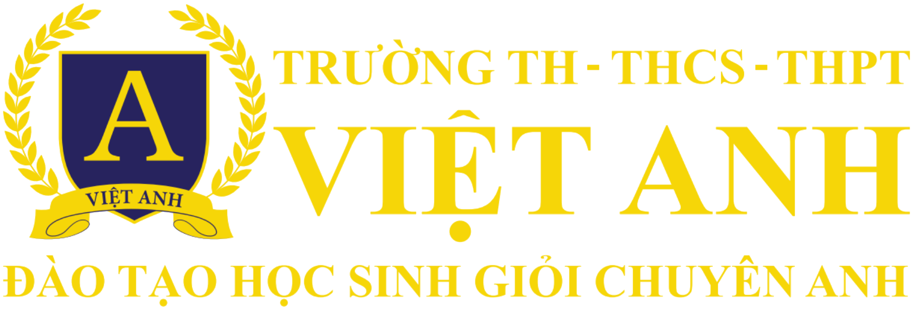
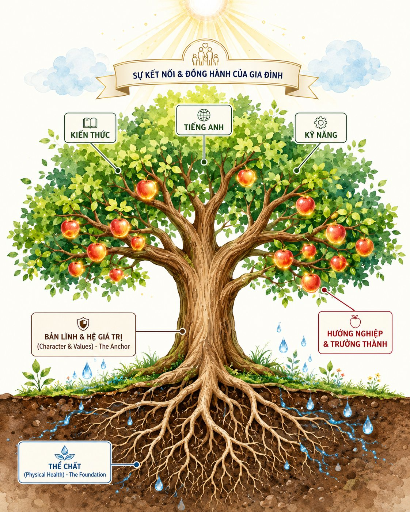

Cẩm nang dành cho Ba/Mẹ · Ấn bản 2026
Bản đồ 7 chặng đường phát triển của con, nhìn theo 6 trục — kèm nghi thức kết nối gia đình, kịch bản đối thoại và việc làm ngay mỗi tuần.
Mục lục
Ba/Mẹ đang vội thì đọc ba trang này
Trang 4 — cây đại thụ, để hiểu vì sao trục yếu nhất mới là trục quyết định. Trang 7 — bản đồ 7 chặng, chụp lại để trong máy. Và ba trang của đúng chặng tuổi con. Ba mươi phút. Phần còn lại để dành, mở khi cần.
Thư ngỏ
Trong mười lăm năm làm giáo dục, câu hỏi tôi nghe nhiều nhất từ Ba/Mẹ không phải là “con tôi có giỏi không”. Nó là: “Giờ này tôi nên làm gì cho con?”
Câu hỏi ấy khó trả lời vì mỗi độ tuổi cần một câu trả lời khác nhau. Thứ giúp một bé ba tuổi lớn lên tốt lại gần như vô dụng với một bạn lớp 9. Và ngược lại — nhiều điều Ba/Mẹ dồn sức làm ở cấp ba thì đáng lẽ phải bắt đầu từ mười năm trước, lúc còn dễ và còn rẻ.
Phần lớn những khoảng trống tôi gặp ở học sinh không đến từ một biến cố. Chúng tích lại rất chậm, qua nhiều năm, từ những chỗ không ai để ý: một cửa sổ ngôn ngữ khép lại lặng lẽ, một thói quen tự lập chưa kịp hình thành, một năm tiểu học trôi qua mà con chỉ học thuộc chứ chưa hiểu. Đến khi thấy được thì việc sửa đã tốn gấp nhiều lần.
Cuốn cẩm nang này ra đời để Ba/Mẹ nhìn thấy chúng sớm hơn. Nó chia chặng đường 0–18 thành bảy chặng, mỗi chặng nói rõ ba điều: giai đoạn này quyết định cái gì, Ba/Mẹ nên quan sát dấu hiệu nào, và làm được gì ngay tuần này — bằng những việc không tốn tiền, không cần chuyên gia, làm được ở bàn ăn nhà mình.
Nhưng tôi muốn nói thêm một điều mà càng làm nghề lâu tôi càng tin: giáo dục con thực chất là hành trình tự giáo dục chính mình của cha mẹ. Trẻ không học từ những gì ta nói; chúng học từ cách ta sống. Vì vậy mỗi chặng trong cuốn này đều có một mục nhỏ dành riêng cho Ba/Mẹ — không phải việc để làm cho con, mà là việc để tự rèn lấy mình.
Tôi cố ý không viết nó thành một cuốn giới thiệu trường. Những con số trong đây đều dẫn nguồn, và Ba/Mẹ dùng được dù con đang học ở đâu. Phần Trường Việt Anh làm gì, tôi gói riêng trong một ô nhỏ ở cuối mỗi chặng — để Ba/Mẹ tự đối chiếu, chứ không phải để thuyết phục.
Mong cuốn sách nhỏ này giúp Ba/Mẹ bớt một chút lo, và biết chắc hơn một chút rằng mình đang làm đúng việc, đúng lúc.
Nguyễn Mạnh Dương
Nhà sáng lập & Chủ tịch Hệ thống Giáo dục K-12 Việt Anh
Tốt nghiệp Manchester Metropolitan University
Phần một
Không phải một chuỗi nhiệm vụ phải hoàn thành, mà là một cơ thể sống có gốc, có thân, có tán — và có người tưới.

Đọc cái cây
| Bộ phận | Trục này thật ra là gì |
|---|---|
| Rễ sâu bền Thể chất |
Dinh dưỡng, vận động, giấc ngủ, thị lực — và ở tuổi teen là cả sức khoẻ tinh thần. Rễ yếu thì cây không đủ sức nuôi tán. Đây là trục bị hy sinh đầu tiên mỗi khi việc học căng lên, và trả giá muộn nhất. |
| Thân cây vững chãi Bản lĩnh & Hệ giá trị |
Bệ đỡ nội tâm, dựng trên năm giá trị: Tôn trọng · Trách nhiệm · Tài giỏi · Chính trực · Yêu thương. Thân cứng thì cành có vươn xa đến đâu cũng không gãy trước cám dỗ và áp lực. |
| Cành lá vươn cao Kiến thức · Tiếng Anh · Kỹ năng |
Kiến thức — con xử lý thông tin ở tầng nào: nhớ lại, hay hiểu, hay phân tích và tự đánh giá được. Tiếng Anh — trục duy nhất có hạn dùng sinh học, khả năng đạt phát âm gần bản ngữ khép dần sau tuổi 17–18. Kỹ năng — tự lập, điều tiết cảm xúc, hợp tác, dám thể hiện, kiên trì khi việc khó. |
| Trái ngọt Hướng nghiệp & Trưởng thành |
Hiểu mình mạnh ở đâu, thích gì, rồi chọn hướng có căn cứ. Trục này chỉ có ý nghĩa khi con đủ lớn để tự quan sát mình — nhưng lại phải quyết định ngay từ lớp 10. |
| Nắng và nước Gia đình |
Không phải một trục của con, mà là môi trường quanh con: sự hiện diện trọn vẹn, tình yêu thương không điều kiện, và những nghi thức kết nối lặp lại mỗi ngày. |
Nguyên lý quan trọng nhất trong cuốn này
Các trục kéo nhau. Một đứa trẻ ngủ không đủ và ít vận động thì trục Kiến thức tụt theo — nghiên cứu trên học sinh cho thấy nhóm vận động đều đặn có điểm Toán cao hơn khoảng 6%. Một đứa trẻ chưa biết điều tiết cảm xúc thì học bao nhiêu cũng khó giữ. Ngược lại, đứa trẻ vững ở trục Kỹ năng và Bản lĩnh thường tự kéo trục Kiến thức lên mà Ba/Mẹ không phải kèm từng tối.
Nghĩa là: trục yếu nhất mới là trục quyết định, không phải trục mạnh nhất. Cả cuốn sách này được thiết kế quanh đúng một câu hỏi — trục nào của con đang thấp nhất — và Ba/Mẹ chỉ cần dồn sức vào đúng trục đó.
Nguồn: Freeman et al., PNAS 2014 · Krathwohl 2001 · Hartshorne et al., Cognition 2018 · Frontiers in Public Health 2025.
Cách dùng cuốn này
Ba điều cuốn này không phải
Một lời nhắc về sự tử tế với chính mình
Sẽ có chặng Ba/Mẹ đọc và thấy mình đã bỏ lỡ. Gần như ai cũng vậy — kể cả những người làm nghề giáo dục. Cửa sổ phát triển đóng lại chậm chứ không sập, và rất nhiều thứ vẫn vá được ở chặng sau, chỉ là cần kiên nhẫn hơn. Điều tệ nhất Ba/Mẹ có thể làm sau khi đọc cuốn này là tự trách. Điều tốt nhất là chọn một việc, bắt đầu tối nay.
Phần hai
Mỗi chặng có một thứ mở ra rộng nhất rồi khép lại dần. Đây là trang Ba/Mẹ nên chụp lại để trong máy.
Một quy luật xuyên suốt bảy chặng
Càng về sau, mọi thứ càng đắt hơn. Một thói quen đọc sách gây dựng lúc con hai tuổi tốn mười lăm phút mỗi tối. Cũng thói quen ấy xây lại ở tuổi mười lăm cần thay đổi cả nếp sống của con lẫn của nhà. Điều này đúng với gần như mọi trục — rõ nhất ở tiếng Anh và ở tính tự lập.
Chặng 1 — Nhà trẻ
Đây là chặng ít giấy tờ nhất và quan trọng nhất. Không điểm số, không bài kiểm tra — nhưng phần lớn nền móng được đặt ở đây.
Trong ba năm đầu, não của bé tạo hơn một triệu kết nối thần kinh mỗi giây, và đạt khoảng 90% kích thước não người lớn trước năm tuổi. Thứ quyết định những kết nối nào được giữ lại rất đơn giản: bé được tương tác với người thật bao nhiêu. Không ứng dụng nào, không đồ chơi thông minh nào thay được ánh mắt và giọng nói của Ba/Mẹ.
| Trục | Ba/Mẹ nên quan sát điều gì |
|---|---|
| Kiến thức | Bé nói được bao nhiêu từ, đã ghép 2–3 từ chưa? Mỗi ngày bé được trò chuyện và đọc sách cùng người lớn bao lâu, so với thời gian trước màn hình? |
| Kỹ năng | Khi xa Ba/Mẹ, bé thích nghi được hay bám chặt rất lâu? Bé đã tự xúc ăn, tự cầm ly uống nước chưa? |
| Tiếng Anh | Bé đã được nghe tiếng Anh chưa, có phải giọng bản ngữ không? Ở tuổi này mục tiêu là quen tai, không phải học từ vựng. |
| Thể chất | Bữa ăn có bình yên không hay là một cuộc chiến? Nhịp ăn – ngủ – vận động ngoài trời có đều mỗi ngày không? |
| Hướng nghiệp | Chưa mở ở chặng này. |
| Bản lĩnh & Hệ giá trị | Khi bé khóc hay sợ, bé có nhận được phản hồi ấm áp không? Đây là nơi giá trị đầu tiên — Yêu thương — được gieo, qua sự gắn bó an toàn. |
Nếu chặng này bị bỏ lỡ
Kết nối
Nghi thức 15 phút mỗi ngày — “Tắm trong ngôn ngữ & ôm ấp trọn vẹn”
Mỗi tối trước khi ngủ, tắt hoàn toàn thiết bị điện tử. Ba/Mẹ ôm con vào lòng, vuốt ve nhẹ nhàng, đọc một cuốn truyện tranh ngắn, rồi thủ thỉ kể về một ngày của mình bằng giọng ấm áp. Bé chưa hiểu hết chữ, nhưng bé thu nhận toàn bộ nhịp điệu, ngữ điệu và cảm giác an toàn.
Kịch bản đối thoại mẫu
Khi con khóc ăn vạ đòi điện thoại
Tấm gương soi cho Ba/Mẹ
Rèn điều tiết cảm xúc của chính mình. Trẻ ở tuổi này học cách điều hoà hệ thần kinh thông qua hệ thần kinh của người lớn bên cạnh. Nghĩa là trước khi dạy con bình tĩnh, Ba/Mẹ phải bình tĩnh được trước đã — không quát tháo, không bạo lực ngôn từ trước mặt con. Một ngôi nhà yên là bài học đầu tiên và sâu nhất mà bé nhận được ở chặng này.
Hành động
Việc làm ngay tuần này
Tự kiểm nhanh
Ở Trường Việt Anh, chặng này được làm thế nào
Lớp nhà trẻ giữ sĩ số nhỏ để mỗi bé được tương tác với người thật thay vì màn hình; theo dõi 9 lĩnh vực phát triển bằng bộ công cụ COR Advantage. Nhịp ngày cố định kết hợp Plan-Do-Review giúp bé hình thành tự lập sớm. Có giai đoạn làm quen và Morning Meeting để bé chuyển tiếp đi trẻ an toàn. Tiếng Anh khoảng 6 tiết mỗi tuần với giáo viên nước ngoài. Dinh dưỡng nghiêm ngặt, vận động hằng ngày, ngủ trưa tại trường.
Nguồn: Harvard Center on the Developing Child · COR Advantage · Hartshorne et al., Cognition 2018 · WHO Guidelines 2020.
Chặng 2 — Mẫu giáo
Đây là đỉnh tò mò của cả tuổi thơ. Tò mò hành xử đúng như một ngọn lửa: được nuôi thì cháy tiếp thành niềm ham học suốt đời, bị dập nhiều lần thì tắt.
Ở tuổi này Ba/Mẹ dễ bị cuốn vào câu hỏi “con đã biết chữ chưa”. Nhưng hai thứ dự báo việc học của con tốt hơn nhiều là: con còn muốn hỏi không, và con ngồi được với một việc bao lâu. Lớp 1 sẽ đòi con ngồi tập trung khoảng 35 phút mỗi tiết — khả năng chú ý có chủ đích được xây chính ở đây, qua việc con tự chọn một hoạt động, làm cho xong, rồi nhìn lại.
| Trục | Ba/Mẹ nên quan sát điều gì |
|---|---|
| Kiến thức | Bé có hỏi “tại sao” liên tục không? Bé ngồi yên hoàn thành một hoạt động tự chọn được khoảng 10–15 phút chưa? |
| Kỹ năng | Bé chơi với bạn thế nào — biết chia sẻ và chờ tới lượt chưa? Khi nổi giận, bé tự bình tĩnh lại được không? |
| Tiếng Anh | Bé có thích thú bắt chước nói theo các từ ngắn, các bài hát tiếng Anh vui nhộn không? |
| Thể chất | Bé đã quen ăn đồ ngọt, snack chưa? Bé có được vận động tự do để phát triển thăng bằng và độ dẻo dai không? |
| Hướng nghiệp | Chưa mở ở chặng này. |
| Bản lĩnh & Hệ giá trị | Con học tôn trọng giới hạn của mình và của người khác qua việc biết lắng nghe và nhường bạn — giá trị Tôn trọng bắt đầu từ đây. |
Nếu chặng này bị bỏ lỡ
Kết nối
Nghi thức 15 phút mỗi ngày — “Story time & trò chơi Nếu như…”
Mỗi tối cùng con lật một cuốn truyện. Đọc xong, dành 15 phút chơi trò “Nếu như…”: “Nếu con là bạn thỏ trong truyện, con sẽ làm gì khi gặp sói?” Hãy để con bay bổng tự do, không phán xét đúng sai. Đây là bài tập tưởng tượng và ngôn ngữ mạnh nhất ở tuổi này, và nó không tốn một đồng nào.
Kịch bản đối thoại mẫu
Khi con hỏi “Tại sao bầu trời màu xanh?” mà Ba/Mẹ không biết trả lời
Tấm gương soi cho Ba/Mẹ
Cất điện thoại xuống trước. Muốn con bớt đòi màn hình và tập trung chơi, Ba/Mẹ phải là tấm gương. Khi bước về nhà, hãy cất điện thoại vào một góc và hiện diện trọn vẹn bằng ánh mắt cùng cuộc trò chuyện thật. Trẻ ở tuổi này không nghe lời ta nói; chúng sao chép việc ta làm.
Hành động
Việc làm ngay tuần này
Tự kiểm nhanh
Ở Trường Việt Anh, chặng này được làm thế nào
Học qua dự án khám phá để giữ lửa tò mò, theo dõi 9 lĩnh vực phát triển bằng COR Advantage. Plan-Do-Review hằng ngày rèn chú ý có chủ đích. Morning Meeting, hoạt động nhóm và 5 giá trị cốt lõi dạy kỹ năng xã hội – cảm xúc; cô làm mẫu cách xử lý xung đột. Giáo viên nước ngoài đồng hành 6 tiết mỗi tuần qua Story time và trò chơi ngôn ngữ. Bữa ăn tập thể có cô đồng hành — chuyện biếng ăn thường cải thiện rõ trong môi trường này.
Nguồn: COR Advantage · Viện Dinh dưỡng Quốc gia 2019–2020 · WHO Guidelines 2020.
Chặng 3 — Lớp Lá
Đây là chặng Ba/Mẹ lo nhiều nhất và dễ lo nhầm chỗ nhất. Câu hỏi phổ biến là “con đã biết đọc chưa”. Câu hỏi đúng hơn là: con đã ngồi được chưa, tự lo được chưa, dám nói chưa.
Chữ và số con sẽ được dạy bài bản ở lớp 1. Còn nề nếp, tự lập và lòng tự tin thì không trường lớp nào dạy lại kịp nếu bỏ lỡ ở nhà. Thiếu khả năng tập trung là một trong những lý do hàng đầu khiến trẻ lớp 1 “không theo kịp” — dù con hoàn toàn không kém thông minh.
Năm dấu hiệu con đã sẵn sàng vào lớp 1
Nếu chặng này bị bỏ lỡ
Kết nối
Nghi thức 15 phút mỗi ngày — “Show and Tell tại nhà”
Mỗi tối trước bữa ăn, dành 15 phút cho “Sân khấu gia đình”. Mỗi thành viên — kể cả Ba/Mẹ — chọn một món đồ bất kỳ trong nhà và đứng lên nói về nó trong một phút: nó là gì, vì sao mình thích nó. Nghi thức nhỏ này xây cho con sự tự tin đứng trước người khác, thứ sẽ theo con suốt cả cấp tiểu học.
Kịch bản đối thoại mẫu
Khi con làm chậm, mặc áo ngược hoặc soạn cặp lộn xộn
Tấm gương soi cho Ba/Mẹ
Ngăn nắp và tôn trọng giờ giấc của chính mình. Ba/Mẹ để đồ đúng chỗ, đi ngủ đúng giờ, thì con tự học theo sự kỷ luật đó mà không cần ai cằn nhằn. Ở tuổi chuẩn bị vào lớp 1, nề nếp của nhà chính là nề nếp con sẽ mang tới lớp.
Hành động
Việc làm ngay tuần này
Tự kiểm nhanh
Ở Trường Việt Anh, chặng này được làm thế nào
Lớp Lá chuẩn bị năng lực sẵn sàng vào lớp 1 bằng các hoạt động trải nghiệm, không ép viết chữ kiểu nhồi — mục tiêu là con thích học chứ không sợ học. Plan-Do-Review và học qua dự án rèn chú ý có chủ đích. Morning Meeting và Show & Tell hằng ngày nuôi sự tự tin. Thể lực được bồi đắp qua các tiết vận động đa dạng như bơi lội và aerobic.
Nguồn: Chương trình GDPT 2018 · Frontiers in Public Health 2025 · WHO Guidelines 2020.
Chặng 4 — Đầu tiểu học
Chặng này có hai việc phải làm cùng lúc, và Ba/Mẹ thường chỉ nhìn thấy một.
Việc ai cũng thấy: nền đọc – viết – toán. Hổng ở lớp 1–2 giống vết nứt ở móng nhà — chương trình các năm sau cứ tiếp tục chồng lên cái móng nứt đó, khiến lỗ hổng phình to theo kiểu lãi kép.
Việc ít ai nhắc: con có còn thích đi học không. Mất hứng thú ở đầu cấp là gốc của chán học kéo dài nhiều năm, và nó đến rất âm thầm — thường là khi việc học biến thành chuỗi nhiệm vụ phải xong để khỏi bị mắng. Có một bằng chứng đáng nhớ: khi việc học được tổ chức theo hướng chủ động — con làm, thảo luận, giải thích lại — thay vì chỉ ngồi nghe, điểm thi tăng khoảng 6% và nguy cơ trượt môn giảm khoảng 1,5 lần.
| Trục | Ba/Mẹ nên quan sát điều gì |
|---|---|
| Kiến thức | Con theo kịp đọc trôi chảy, viết đúng dòng, tính toán cơ bản chưa? Con hiểu bài và giải thích lại được, hay chỉ học vẹt để đối phó? |
| Kỹ năng | Con tự giác ngồi vào bàn học hay mỗi tối đều là một cuộc thương lượng? Con hoà nhập với bạn bè ở lớp ra sao? |
| Tiếng Anh | Mỗi tuần con được tiếp xúc môi trường tiếng Anh giao tiếp bao nhiêu? Chương trình phổ thông hiện hành là 4 tiết mỗi tuần. |
| Thể chất | Chiều cao, cân nặng có trong chuẩn không? Con có bị lạm dụng màn hình giải trí sau giờ học không? |
| Hướng nghiệp | Chưa mở ở chặng này. |
| Bản lĩnh & Hệ giá trị | Con có biết nhận lỗi khi làm sai không? Giá trị Chính trực bắt đầu từ việc con dám nói thật về điểm kém. |
Kết nối
Nghi thức 15 phút mỗi ngày — “Chiếc hộp Cảm xúc”
Đặt một chiếc hộp nhỏ ở phòng khách. Mỗi tối, cả nhà viết hoặc vẽ lên một mảnh giấy cảm xúc vui nhất — hoặc buồn nhất — của mình hôm nay rồi bỏ vào hộp. Sau bữa tối, dành 15 phút mở ra chia sẻ và lắng nghe nhau. Nguyên tắc duy nhất: không phán xét, không răn dạy, không sửa lưng.
Kịch bản đối thoại mẫu
Khi con làm sai bài toán hoặc bị điểm kém
Tấm gương soi cho Ba/Mẹ
Làm gương học tập suốt đời. Thiết lập một khung giờ “cả nhà cùng học”. Khi con ngồi học bài, Ba/Mẹ không xem tivi hay lướt điện thoại bên cạnh — hãy đọc một cuốn sách hoặc tự học một thứ mới. Để con thấy học là việc tự nhiên của người trưởng thành, chứ không phải hình phạt dành riêng cho trẻ con.
Hành động
Việc làm ngay tuần này
Tự kiểm nhanh
Ở Trường Việt Anh, chặng này được làm thế nào
Lớp tối đa 24 em và dạy phân tầng năng lực để cô kèm đúng mức của từng con; Tutor sau giờ vá lỗ hổng ngay tại trường, giảm áp lực học thêm cho cả nhà. Học qua dự án và Likeability — con được chọn cách thể hiện — để giữ động cơ học. Năm giá trị cốt lõi được lượng hoá thành 25 hành động chấm mỗi tuần, cùng Học kỳ Foundation 28 ngày. Tiếng Anh nhiều buổi với giáo viên nước ngoài; thể thao hằng ngày.
Nguồn: Freeman et al., PNAS 2014 · Chương trình GDPT 2018 · WHO Guidelines 2020.
Chặng 5 — Cuối tiểu học
Nếu chỉ được chọn một việc để làm đúng ở cuối tiểu học, hãy chọn việc này: chuyển con từ học thuộc sang học hiểu, và từ được kèm sang tự học.
Ở lớp 1–2, học thuộc vẫn đủ để đạt điểm cao. Từ lớp 6 trở đi thì không — số môn tăng vọt và đề bắt đầu đòi phân tích. Một đứa trẻ quen học vẹt sẽ đuối rất nhanh ở học kỳ đầu THCS, và điều đau nhất là chuyện đó thường bị quy cho “con lười”, trong khi vấn đề thật là con chưa từng được dạy cách học khác.
Đây cũng là chặng quyết định chuyện học thêm. Con không tự xoay được bài khó thì gia đình sẽ trượt dần vào lịch học thêm dày đặc — tốn kém, ăn mất thời gian vận động và ngủ, và nghịch lý là càng làm con phụ thuộc hơn.
| Trục | Ba/Mẹ nên quan sát điều gì |
|---|---|
| Kiến thức | Con học hiểu bản chất hay học thuộc để trả bài? Con tự xoay được bài khó, hay phải phụ thuộc học thêm dày đặc? |
| Kỹ năng | Con tự quản thời gian tới đâu? Con có dám nhận vai trò trưởng nhóm, dám tổ chức, dám thể hiện không? |
| Tiếng Anh | Con đã viết và thuyết trình được chưa, hay vẫn dừng ở làm bài ngữ pháp trên giấy? Gia đình đã có lộ trình rõ ràng cho cấp hai chưa? |
| Thể chất | Thị lực và cân nặng có được bảo vệ trước áp lực bài vở không? Con có giữ đều ít nhất một môn thể thao? |
| Hướng nghiệp gieo mầm sớm |
Con đã biết đến các nhóm nghề cơ bản chưa? Con có được khuyến khích bộc lộ thiên hướng tự nhiên qua sở thích và trải nghiệm không? |
| Bản lĩnh & Hệ giá trị | Con có kiên trì làm bài khó đến cùng không? Giá trị Tài giỏi ở đây nghĩa là chịu khó vượt khó, không phải là điểm số. |
Kết nối
Nghi thức 15 phút mỗi ngày — “Bản tin bàn ăn”
Thay vì hỏi điểm số, mỗi bữa tối hãy hỏi con một câu khác: “Hôm nay có điều gì lạ hoặc thú vị nhất mà con quan sát được ở trường hay ngoài đường?” Ba/Mẹ kể chuyện của mình trước để mở đường. Câu hỏi Ba/Mẹ chọn sẽ định hình thứ con để tâm — hỏi điểm thì con nhớ điểm, hỏi quan sát thì con bắt đầu quan sát.
Kịch bản đối thoại mẫu
Khi con gặp bài tập khó và mếu máo đòi Ba/Mẹ giải hộ
Tấm gương soi cho Ba/Mẹ
Tự học một thứ mới ngay trước mặt con. Học một ngoại ngữ, học lập trình cơ bản, đọc sách chuyên môn — và quan trọng hơn: kể cho con nghe chỗ nào Ba/Mẹ thấy khó, đã bỏ cuộc mấy lần, rồi làm sao mà vượt qua. Con học thái độ kiên trì từ đúng những câu chuyện đó, chứ không từ lời khuyên.
Hành động
Việc làm ngay tuần này
Tự kiểm nhanh
Ở Trường Việt Anh, chặng này được làm thế nào
Sàn tối thiểu của mỗi bài học đặt ở bậc Phân tích trong thang Bloom, kết hợp khung tư duy phản biện 5 bước. Tutor sau giờ và dạy phân tầng năng lực ngay tại trường. Học sinh tự lên kế hoạch và đứng ra tổ chức các sự kiện học đường lớn nhỏ. Lộ trình tiếng Anh đo bằng PDR. Trường yêu cầu cam kết tối thiểu một môn thể thao, tần suất từ ba buổi mỗi tuần.
Nguồn: Freeman et al., PNAS 2014 · Krathwohl 2001 · WHO Guidelines 2020.
Chặng 6 — THCS
Nhiều gia đình dồn sức cho lớp 12. Nhưng phần lớn những gì quyết định lớp 12 đã được định đoạt xong ở đây.
Ba việc lớn cùng diễn ra. Thứ nhất, số môn tăng vọt và đề bắt đầu đòi phân tích — nếu con vẫn học thuộc đối phó, khoảng cách sẽ nới rộng từng học kỳ. Thứ hai, con dậy thì: sức khoẻ tinh thần bước vào giai đoạn nhạy cảm nhất, và một đứa trẻ tuổi này cần được lắng nghe nhiều hơn là được dạy.
Thứ ba — điều nhiều Ba/Mẹ không kịp chuẩn bị: trục Hướng nghiệp mở ra ngay tại đây, chứ không phải ở cấp ba. Theo chương trình phổ thông hiện hành, ngay từ lớp 10 con đã phải chọn tổ hợp môn. Nếu đến cuối lớp 9 con vẫn mơ hồ về thế mạnh của mình, lựa chọn đó sẽ dựa trên cảm tính hoặc theo bạn — và sửa lại có thể mất một đến hai năm.
| Trục | Ba/Mẹ nên quan sát điều gì |
|---|---|
| Kiến thức | Con học bằng tư duy phân tích hay vẫn học thuộc đối phó? Con tự quản được việc học khi số môn tăng vọt không? |
| Kỹ năng | Con tự đặt mục tiêu và quản lý thời gian ra sao? Con có tham gia dự án, câu lạc bộ để tích luỹ kỹ năng thật không? |
| Tiếng Anh | Nền tiếng Anh của con đã đủ vững để bước vào giai đoạn tăng tốc ở cấp ba chưa? Gia đình đã có lộ trình cụ thể tới mốc lớp 9 chưa? |
| Thể chất | Sức khoẻ tinh thần của con thế nào — con có ai để tâm sự hay hoàn toàn khép kín? Con còn vận động tối thiểu 3 buổi mỗi tuần không? |
| Hướng nghiệp | Con đã nhận ra thế mạnh và sở thích cốt lõi chưa? Gia đình đã cùng con tìm hiểu nghiêm túc về tổ hợp môn cấp ba chưa? |
| Bản lĩnh & Hệ giá trị | Con có giữ được sự chính trực trước áp lực từ bạn bè đồng trang lứa không? Đây là tuổi Chính trực và Tôn trọng bản thân bị thử thách nhiều nhất. |
Kết nối
Nghi thức mỗi tuần — “15 phút lắng nghe không phán xét”
Chọn một khung giờ cố định trong tuần — chiều Chủ nhật đi cà phê, hay tối thứ Sáu. Ba/Mẹ đóng đúng một vai: người lắng nghe trọn vẹn. Chỉ nghe con kể về bạn bè, trường lớp, thần tượng. Không phán xét, không dạy đời, không chỉnh sửa suy nghĩ của con. Ở tuổi này, được lắng nghe mà không bị sửa là thứ hiếm nhất — và Ba/Mẹ là người duy nhất có thể cho con điều đó.
Kịch bản đối thoại mẫu
Khi con đóng sầm cửa phòng vì áp lực điểm số hoặc mâu thuẫn với bạn
Tấm gương soi cho Ba/Mẹ
Tôn trọng ranh giới riêng tư của con. Đây là lúc Ba/Mẹ phải tự kiểm soát cơn tò mò của mình: không tự ý xem điện thoại, không đọc trộm nhật ký, không lục đồ cá nhân của con. Sự tôn trọng ta cho đi ở tuổi này là thứ duy nhất khiến con còn muốn quay lại kể chuyện với ta ở tuổi mười tám.
Hành động
Việc làm ngay tuần này
Tự kiểm nhanh
Ở Trường Việt Anh, chặng này được làm thế nào
Khung Critical Thinking 5 bước với sàn Bloom ở bậc Phân tích. Lớp tối đa 24 em, phân tầng năng lực, Tutor sau giờ. The Leader in Me, 7 thói quen và GRIT rèn tự lãnh đạo; học sinh ứng cử vai trò lãnh đạo cấp lớp và cấp trường, tự tổ chức sự kiện. Tiếng Anh 9–10 tiết mỗi tuần có giáo viên nước ngoài, với lộ trình IELTS đặt mục tiêu học sinh đủ năng lực từ lớp 9 đạt 6.0+ trước tốt nghiệp. Học kỳ Foundation 28 ngày giúp con hiểu mình trước khi chọn hướng.
Nguồn: Chương trình GDPT 2018 · WEF Future of Jobs Report 2025 · EF EPI 2024 · Talentnet–Mercer 2025 · WHO Guidelines 2020.
Chặng 7 — THPT
Chặng cuối là chặng ít thời gian nhất và nhiều áp lực nhất. Vì vậy nó cũng là chặng dễ hy sinh sai thứ nhất.
Việc đầu tiên đến ngay khi con bước vào lớp 10: chọn tổ hợp môn. Theo chương trình phổ thông hiện hành, lựa chọn này diễn ra ở đầu cấp — chọn sai có thể khiến con mất một đến hai năm điều chỉnh, hoặc vào nhầm ngành rồi mới nhận ra.
Việc thứ hai là hồ sơ vào đời — thứ không nằm trong học bạ. Theo báo cáo của Diễn đàn Kinh tế Thế giới, khoảng 39% kỹ năng cốt lõi sẽ đổi mới đến năm 2030, và 70% doanh nghiệp xếp tư duy phân tích ở vị trí số một. Khi xét tuyển kết hợp ngày càng phổ biến, một hồ sơ chỉ có điểm sẽ ngày càng yếu thế.
Và tiếng Anh có một hạn chót sinh học ở đây: khả năng đạt trình độ gần như bản ngữ giảm dần sau khoảng 17–18 tuổi. Việt Nam hiện xếp 63/116 về năng lực tiếng Anh, thuộc nhóm thấp — trong khi người thành thạo được trả cao hơn 30–50%, và doanh nghiệp FDI trả cao hơn doanh nghiệp nội địa khoảng 26–33%.
| Trục | Ba/Mẹ nên quan sát điều gì |
|---|---|
| Kiến thức | Gặp đề lạ, con lần ra hướng giải hay khựng lại chờ bài mẫu? Sĩ số lớp con có quá đông để thầy cô theo sát không? |
| Kỹ năng | Ngoài điểm số, con tích luỹ được năng lực tự học và giải quyết vấn đề nào? Con có nói ra được ba phẩm chất mình tự hào nhất không? |
| Tiếng Anh | Con dùng tiếng Anh để thuyết trình và đọc tài liệu, hay vẫn dừng ở luyện đề trên giấy? |
| Thể chất | Con ngủ mấy tiếng mỗi đêm trong mùa thi? Còn giữ được vận động để giải toả căng thẳng không? |
| Hướng nghiệp | Quyết định chọn tổ hợp và ngành học dựa trên hiểu biết về bản thân, hay theo trào lưu và theo bạn? |
| Bản lĩnh & Hệ giá trị | Con có ý thức sống có mục đích và đóng góp không? Đây là nơi giá trị Yêu thương mở rộng ra ngoài gia đình, thành trách nhiệm với cộng đồng. |
Kết nối
Nghi thức mỗi tuần — “Buổi hẹn 1-1”
Mỗi tuần một lần, ba hoặc mẹ dành riêng một buổi cà phê hoặc bữa tối chỉ có hai người với con. Để con làm chủ cuộc trò chuyện. Hỏi con về dự định, về những áp lực con đang gánh — và nói thẳng rằng mình tin con vượt qua được. Ở tuổi này con sắp rời nhà; những buổi hẹn ấy là thứ con mang theo.
Kịch bản đối thoại mẫu
Khi con bế tắc vì điểm thi thử không như kỳ vọng
Tấm gương soi cho Ba/Mẹ
Kể cho con nghe về thất bại của chính mình. Hãy nói thật về một lần Ba/Mẹ trượt, mất việc, làm sai — và đã đi qua nó thế nào. Đứa trẻ mười bảy tuổi đang sợ thất bại hơn bất cứ điều gì. Thứ gỡ nỗi sợ đó không phải lời động viên, mà là bằng chứng rằng người con tin cậy nhất cũng từng ngã và vẫn đứng dậy được.
Hành động
Việc làm ngay tuần này
Tự kiểm nhanh
Ở Trường Việt Anh, chặng này được làm thế nào
Lớp tối đa 24 em, sàn Bloom ở bậc Phân tích, Tutor sau giờ (18:00–20:00) kèm bài ngay tại trường. Học sinh tự tổ chức lễ hội và dự án, ứng cử vai trò lãnh đạo, được chấm 25 hành động giá trị mỗi tuần — dựa trên năm giá trị cốt lõi: Tôn trọng & Tự trọng · Trách nhiệm · Tài giỏi · Chính trực · Yêu thương. Tiếng Anh 11 tiết mỗi tuần, trong đó 6 tiết với giáo viên nước ngoài, kèm luyện IELTS 1-1. Học kỳ Foundation 28 ngày và tổ định hướng hỗ trợ con chọn tổ hợp môn và lộ trình đại học.
Nguồn: WEF Future of Jobs Report 2025 · Freeman et al., PNAS 2014 · Hartshorne et al., Cognition 2018 · EF EPI 2024 · Talentnet–Mercer 2025 · Sở GD-ĐT TP.HCM 2025 · Chương trình GDPT 2018.
Phụ lục 1
Chuyển cấp là hai thời điểm trẻ dễ khủng hoảng nhất, vì môi trường học và cơ thể con thay đổi cùng lúc. Phần lớn cú sốc đến từ việc không ai báo trước.
Cơn bão học thuật
Số môn tăng từ khoảng 5 môn tích hợp lên hơn 10 môn độc lập. Thay vì học chủ yếu với một cô chủ nhiệm suốt ngày, con phải làm quen với mỗi môn một thầy cô — khác phương pháp dạy, khác cách chấm điểm, khác tính cách.
Cơn bão tâm lý
Con bước vào giai đoạn biến động nội tiết, nhạy cảm với nhận xét của bạn bè, có nhu cầu khẳng định cái tôi và bắt đầu giữ khoảng cách riêng tư với Ba/Mẹ. Sự xa cách này là dấu hiệu phát triển bình thường, không phải dấu hiệu con hư.
Chuẩn bị từ mùa hè trước đó
Phụ lục 1 · tiếp
Áp lực kép: thi tuyển sinh và chọn tổ hợp môn
Kỳ thi tuyển sinh lớp 10 vốn đã căng. Nhưng ngay khi đỗ, con phải quyết định chọn tổ hợp môn theo Chương trình GDPT 2018 — một quyết định ảnh hưởng trực tiếp tới định hướng ngành nghề. Hai áp lực dồn vào cùng một mùa hè, và gia đình thường chỉ chuẩn bị cho cái thứ nhất.
Khủng hoảng bản sắc
Con muốn được thừa nhận như một người trưởng thành, trong khi vẫn đang băn khoăn về năng lực của chính mình, và rất dễ stress trước kỳ vọng điểm số từ gia đình.
Chuẩn bị từ mùa hè trước đó
Phụ lục 2
Đây là phương pháp Trường Việt Anh dùng từ mầm non đến trung học để rèn chú ý có chủ đích và tính tự chịu trách nhiệm. Ba/Mẹ hoàn toàn làm được ở nhà, không cần dụng cụ gì ngoài một cuốn sổ nhỏ.
Bước 1 · Plan — lập kế hoạch
Chuẩn bị một cuốn sổ nhỏ hoặc bảng trắng dán tường. Con tự chọn đúng một đến hai việc muốn làm tốt nhất hôm nay — “tự giải xong ba bài toán”, “tự dọn bàn học gọn”. Con tự ghi hoặc tự vẽ việc đó lên. Điểm mấu chốt: con chọn, không phải Ba/Mẹ giao.
Bước 2 · Do — thực hiện
Con tự làm việc đã cam kết, tập trung, không thiết bị điện tử bên cạnh. Nguyên tắc vàng của Ba/Mẹ: không làm hộ, không thúc liên tục bên tai. Chấp nhận con làm chậm hoặc chưa hoàn hảo. Con bế tắc thì chỉ gợi mở bằng câu hỏi.
Bước 3 · Review — nhìn lại
Trước giờ ngủ, ngồi cùng con bên cuốn sổ. Để con tự nhận định: việc hôm nay xong chưa, con thấy thế nào, gặp khó ở đâu, rút ra gì. Tuyệt đối không dùng giờ Review để trách mắng khi con chưa làm xong — hãy cùng con tìm nguyên nhân và điều chỉnh cho ngày mai. Một lời khen cụ thể vào nỗ lực quý hơn mọi phần thưởng.
Tổng hợp
Trang này để mở nhanh khi Ba/Mẹ đã biết trục nào của con đang yếu nhất.
| Trục | Mầm non · 0–5 tuổi | Phổ thông · 6–18 tuổi |
|---|---|---|
| Kiến thức | Đọc sách tương tác 15 phút mỗi ngày, hỏi những câu khơi gợi “tại sao”. · Tránh màn hình sớm; chơi xếp hình, đếm đồ vật quanh nhà. | Hỏi “vì sao con nghĩ thế” và “còn cách nào khác không”. · Cho con đóng vai thầy cô, giảng lại bài cho cả nhà nghe. |
| Kỹ năng | Giao một việc tự phục vụ mỗi ngày và khen đúng nỗ lực. · Gọi tên cảm xúc giúp con khi con nổi giận, thay vì quát. | Giao trọn một việc nhà cho con tự quản. · Khuyến khích con vào câu lạc bộ hoặc dự án tập thể để rèn hợp tác. |
| Tiếng Anh | Nghe bài hát, đồng dao giọng bản ngữ mỗi ngày cho quen tai. · Không ép dịch; khen mỗi lần con bật ra một từ. | Đưa tiếng Anh vào việc thật: xem phim không thuyết minh, viết, thuyết trình. · Đặt mốc mục tiêu rõ ràng và theo dõi định kỳ. |
| Thể chất | Bỏ nước ngọt có gas, snack, bánh kẹo ngọt. · Giữ cố định giờ ăn, giờ ngủ trưa và ngủ tối. | Bảo vệ giấc ngủ 7–9 tiếng kể cả mùa thi. · Duy trì một môn thể thao tối thiểu ba buổi mỗi tuần. |
| Hướng nghiệp từ cuối tiểu học |
Chưa mở — dồn sức cho bốn trục trên. | Trò chuyện hướng nghiệp sớm qua chính công việc hằng ngày của Ba/Mẹ. · Mỗi tuần một câu hỏi: “việc gì con làm mà quên cả thời gian?” |
| Bản lĩnh & Hệ giá trị | Ba/Mẹ làm gương trong điều tiết cảm xúc, không quát mắng. · Phản hồi ấm áp mỗi khi con sợ hãi — gieo giá trị Yêu thương. | Thảo luận cởi mở về các tình huống đạo đức đời thường. · Dạy con an toàn số và giữ dấu chân kỹ thuật số lành mạnh. |
Nếu chỉ làm được một việc duy nhất
Hãy chọn việc thuộc trục thấp nhất của con, không phải việc dễ nhất hay việc Ba/Mẹ quen làm nhất. Trục thấp nhất là trục đang kéo cả những trục còn lại xuống — và cũng là nơi cùng một nỗ lực tạo ra thay đổi lớn nhất.
Nguồn tham khảo
Cuốn cẩm nang này không đưa ra con số nào mà không nói rõ nguồn. Ba/Mẹ hoàn toàn có thể tra lại từng mục dưới đây.
Phát triển trẻ em & khoa học thần kinh
Ngôn ngữ & tiếng Anh
Phương pháp dạy học
Sức khoẻ & thể chất
Giáo dục & thị trường lao động
Lời chứng của phụ huynh: bảy câu trích ở đầu mỗi chặng đều là lời phụ huynh thật, ghi lại từ video chia sẻ quay tại trường — xem đầy đủ ở trang sau.
Cẩm nang mang tính tham khảo để Ba/Mẹ cùng đồng hành với con, không thay thế chẩn đoán hay tư vấn chuyên môn về giáo dục, y tế và tâm lý.
Bước tiếp theo
Cuốn cẩm nang này cho Ba/Mẹ bản đồ chung của cả chặng 0–18. Nhưng con của anh/chị thì không “chung” — bé mạnh ở trục này và cần đồng hành ở trục khác, và điều đó thay đổi theo từng năm.
Trắc nghiệm “Bản đồ phát triển của con”
Chọn đúng độ tuổi, trả lời vài câu, nhận ngay biểu đồ các trục học tập của con kèm điểm sáng, vùng nên đồng hành và ba việc làm ngay trong tuần. Bốn trục ở mầm non và tiểu học, năm trục từ cấp hai. Miễn phí, khoảng 2 phút, báo cáo gửi kèm qua Zalo để anh/chị lưu lại.
truongvietanh.com/quizNghe chính phụ huynh nói
Bảy câu trích ở đầu mỗi chặng đều là lời phụ huynh thật, ghi lại từ video chia sẻ quay tại trường. Sách in không nhúng được video, nên Ba/Mẹ muốn nghe trực tiếp — kể cả những chia sẻ không trích ở đây — mời xem hơn 30 video cùng các lá thư phụ huynh gửi Ban Giám hiệu tại truongvietanh.com/danh-gia-cua-phu-huynh
© 2026 Hệ thống Giáo dục K-12 Việt Anh. Cẩm nang được biên soạn kính tặng Ba/Mẹ, hoan nghênh chia sẻ nguyên vẹn cho những gia đình khác.